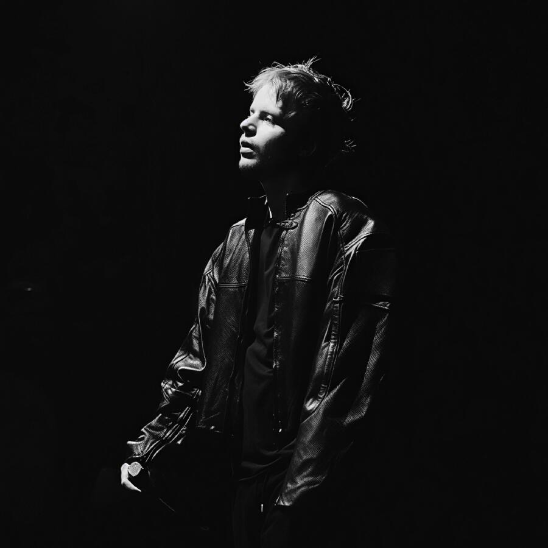
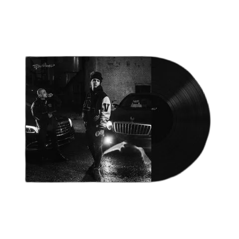

PHARAOH

Один из самых влиятельных представителей новой школы русского рэпа. Начал музыкальную карьеру в 2013 году в составе объединения Dead Dynasty.
Первую популярность получил в 2015 году после выхода клипа "Black Siemens", который стал вирусным и собрал миллионы просмотров. Отличительная черта его стиля — характерные выкрики "скр-скр-скр" и мрачная эстетика.
За свою карьеру выпустил несколько успешных альбомов, включая "Правило", "Phosphor" и "Миллион". Сотрудничал с Boulevard Depo, Mnogoznaal и другими артистами.
Несмотря на слухи о происхождении, Pharaoh сумел доказать, что его успех — результат труда, а не связей. Сегодня он остается одним из самых узнаваемых голосов поколения.

"Правило" — дебютный студийный альбом Pharaoh, выпущенный 27 марта 2020 года на лейбле Dead Dynasty. Альбом включает 13 треков, среди которых "Ночь пятницы", "Без ключа", "AMG", а также совместные работы с Mishaal, Dima Roux, Молодым Платоном и Mnogoznaal.
После выхода альбом сразу занял первое место в чарте Apple Music России, а трек "Без ключа" возглавил чарт ВКонтакте. Альбом был выпущен на виниле ограниченным тиражом.